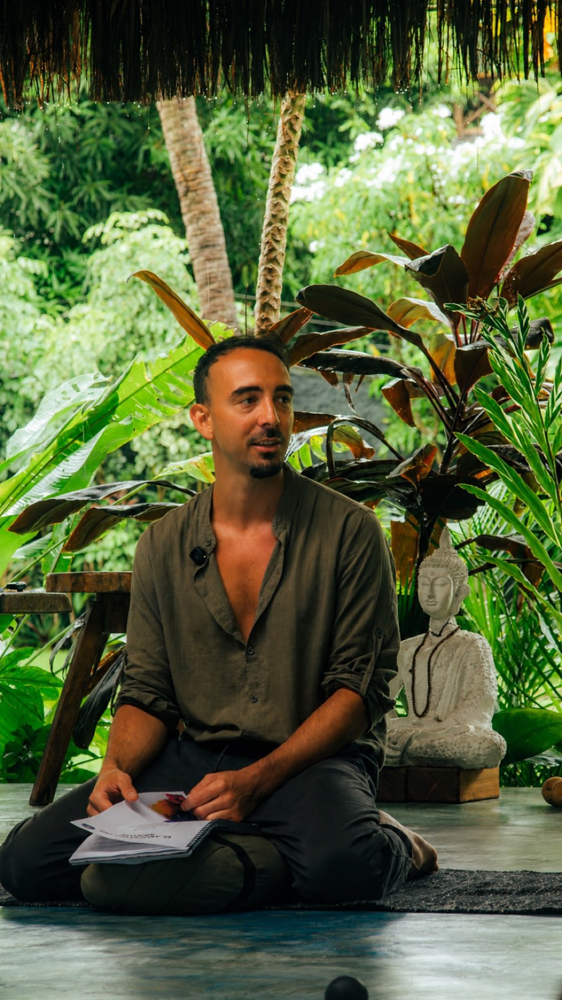

01
Acompañamiento 1 a 1
Agendá una sesión conmigo si venís detectando un bloqueo recurrente en cualquier área de tu vida o estados emocionales recurrentes como vergüenza, culpa, miedo, ansiedad, depresión, angustia, ira, apatía, falta de claridad y motivación.
← VOLVER